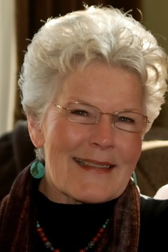

|
|
|
|
Gallery
Blog: Kiln Sitter's Diary
|
Meet Vicki I am a Studio Artist at Moshier Community Art Center in Burien, Washington, south of the city of Seattle. At Moshier I teach beginning and intermediate wheel throwing classes, produce my own work, and fire the reduction kiln. My work, particularly the surface decoration, is inspired by the colors and textures found in nature (with my love of Japanese and Italian ceramics as a contributing factor). I am passionate about, challenged and delighted by, and fulfilled in my work. Each piece is unique. I also collaborate with local painter and illustrator, Kristin Love. I've made some functional and decorative pieces for her to paint with many layers of brilliant underglazes. These pieces are colorful and unique. You can see some of this lovely work at Love Art Works. When I began my work here
in the Seattle area, I created Millennia Antica Pottery - ancient
millennium. Following are some locations in the Seattle area where my work is exhibited and sold: Vicki's BackgroundI have been making pots for many years and have trained with some extraordinary potters, including Warren MacKenzie, Karen Karnes, Rose Lee, Jim Gremel, Graham Stevens, and more recently Joyce Michaud and Tony Clennell . I successfully built my reputation as an artist through shows and gallery openings in Northern California until late 1989. The patrons who collect my work have brought it to Japan, New Zealand, Australia, Brazil, Italy, and many areas of the United States. I was the Resident Artist at Earthworks in West Seattle for 2 years, and had the pleasure of working with the owner of Earthworks, Paul Supplee. After Earthworks closed in September 2002, I moved to the Moshier Community Art Center. When I first took ceramics and pottery classes many years ago, our instructor took the class to the Asian Art Museum in San Francisco. I was hooked - I fell in love with Japanese pottery, particularly the folk pottery produced in Mashiko. I learned about Shoji Hamada and Bernard Leach, and set out to ascertain what was behind this particular kind of expression - pristine simplicity and poetic. I learned everything I could about what actually went into the production of a piece of pottery, and I said I would go to Mashiko. Thirty years later, I did. In April 2002, I had the pleasure of accompanying my husband, Dennis, to Japan. One of the things we did there was to visit Mashiko. Shoji Hamada lived and worked there for many years - his home, workspace, kilns and reference collection museum are still there. Visiting this place was extraordinary - I was in tears a good part of the time. Inspiring is, I think, the word I am looking for. In the middle of Mashiko on April 20, 2002, I was returned to what it was that had me want to be a potter in the beginning - working with the 4 elements (air, earth, fire and water) to create an expression closely tied to the earth and brimming with life. In the summer of 1983, I participated in a workshop with Warren MacKenzie at Big Creek Pottery in Davenport, California, near Santa Cruz. His work is heavily influenced by Hamada and Leach. During this workshop, I made a lidded jar - my "loosen up" project. It was the first one, reminiscent of a Japanese lantern. I still have that jar - Warren coached me through it. And I have considered Warren MacKenzie my mentor since that time. In September 2007, I had the privilege of being in a workshop at Red Lodge Clay Center with Warren. It was amazing! Being with him, watching him work and listening to him talk with all of us, it could have been 1983! He will be 89 in 2013 and is still going strong. West Seattle |